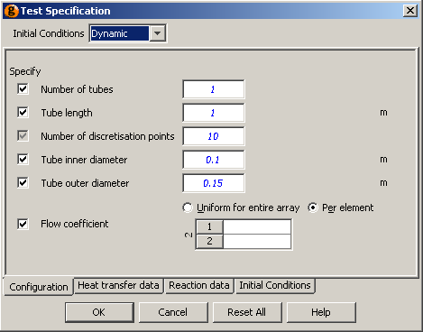

A Model is defined both by its Equations and the specifications that must be provided to satisfy its degrees of freedom. In gPROMS, the required set of specifications and the initial conditions for a Model can be stored with that Model. These are then accessed via its Specification dialog, as shown below.

The Specification dialog makes it easy to share the Model with other users and makes it faster and easier to re-use the Model:
Specification dialogs are accessed from a flowsheet Model's topology tab. (see also: Constructing flowsheet Models).
Specification dialogs allow:
Parameters to be Set values,
Variables to be Assigned values,
Selectors to be given initial values,
and Initial conditions to be defined.
The specifications made using Specification dialogs in a flowsheet Model are displayed as read-only text in the Process entity that includes the flowsheet Model.
In the associated Process entity the user has the option to include unit dialog specifications or not. This option is accessed
either from the Entity menu when the Process entity is selected
or from the short-cut menu accessed by right-clicking on the appropriate Process entity.
When removing dialog specifications; the existing specifications can be left for manual modification or removed completely.
Specification dialogs are configured from a Model's interface tab by clicking the Edit specification ... button. This will also give you the opportunity to define a Model report. Model reports are used to present key results in a clear format following a Simulation activity (see also: Viewing Model reports).
After clicking the Edit specification ... button you are guided through the following five steps:
To move between the steps use the Next and Previous buttons; when the Specification is complete click the Finish button. At any point it is possible to Preview the specification dialog and the Model reports using the Preview specification and Preview report buttons: